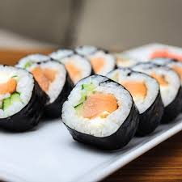

Order lists
- Titanic
- Ironman
- Superman
Unorder lists
- Football
- Cricket
- Volleyball
Nested lists
- Class Name
- Python
- ICT
- Web programming
- Database
- development program
- Multimedia
- program
Favourite Sports
- Football
- Cricket
- Sakib Al Hasan
- Mustafizur
- Volleyball
Definition List
- Computer
- A computer is a programmable electronic device that can store, process, and output data. It works by accepting input, processing it according to a set of instructions (programs), and then producing an output.
- Sushi
-

Sushi is a traditional Japanese dish made with vinegared rice (鮨飯, sushi-meshi), typically seasoned with sugar and salt, and combined.The modern form of sushi is believed to have been created by Hanaya Yohei, who invented nigiri-zushi, the most commonly recognized type today, in which seafood is placed on hand-pressed vinegared rice.
Email us